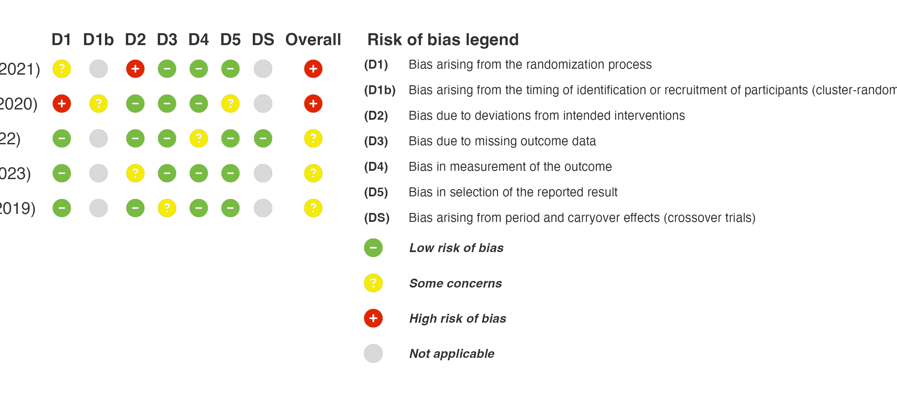
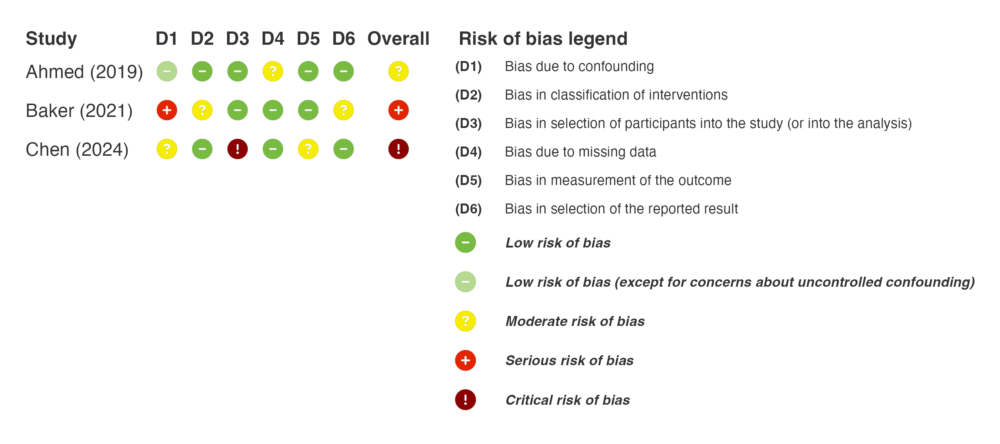

Get started with robbR
robbR.Rmd
library(robbR)Data
One row per study, with an Author and Year
column and one column per domain (D1, D2, …).
Judgements are standardised, so "low",
"Low risk" and "low risk of bias" all become
"Low".
rob_data <- tibble::tibble(
Author = c("Smith", "Jones", "Brown", "Lee", "Patel"),
Year = c(2019, 2020, 2021, 2022, 2023),
weight = c(0.30, 0.25, 0.20, 0.15, 0.10),
D1 = c("Low", "High", "Some concerns", "Low", "Low"),
D1b = c(NA, "Some concerns", NA, NA, NA),
DS = c(NA, NA, NA, "Low", NA),
D2 = c("Low", "Low", "High", "Low", "Some concerns"),
D3 = c("Some concerns", "Low", "Low", "Low", "Low"),
D4 = c("Low", "Low", "Low", "Some concerns", "Low"),
D5 = c("Low", "Some concerns", "Low", "Low", "Low"))D1b (cluster-randomised trials) and DS
(crossover trials) are optional RoB 2 domains. Leave them
NA for other designs.
Traffic-light plot
The overall column is derived from the domains when it is not supplied.
rob_plot(rob_data, add_rob_legend = TRUE)
Other tools
Set rob_tool to "robins_i",
"robins_e", "quadas2", "clarity",
"rob_nma", "probast" or
"probast_ai".
robins_data <- tibble::tibble(
study = c("Ahmed", "Baker", "Chen"),
pub_year = c(2019, 2021, 2024),
D1 = c("Low (except confounding)", "Serious", "Moderate"),
D2 = c("Low", "Moderate", "Low"),
D3 = c("Low", "Low", "Critical"),
D4 = c("Moderate", "Low", "Low"),
D5 = c("Low", "Low", "Moderate"),
D6 = c("Low", "Moderate", "Low"))
rob_plot(robins_data, studyvar = study, year = pub_year, rob_tool = "robins_i", add_rob_legend = TRUE)